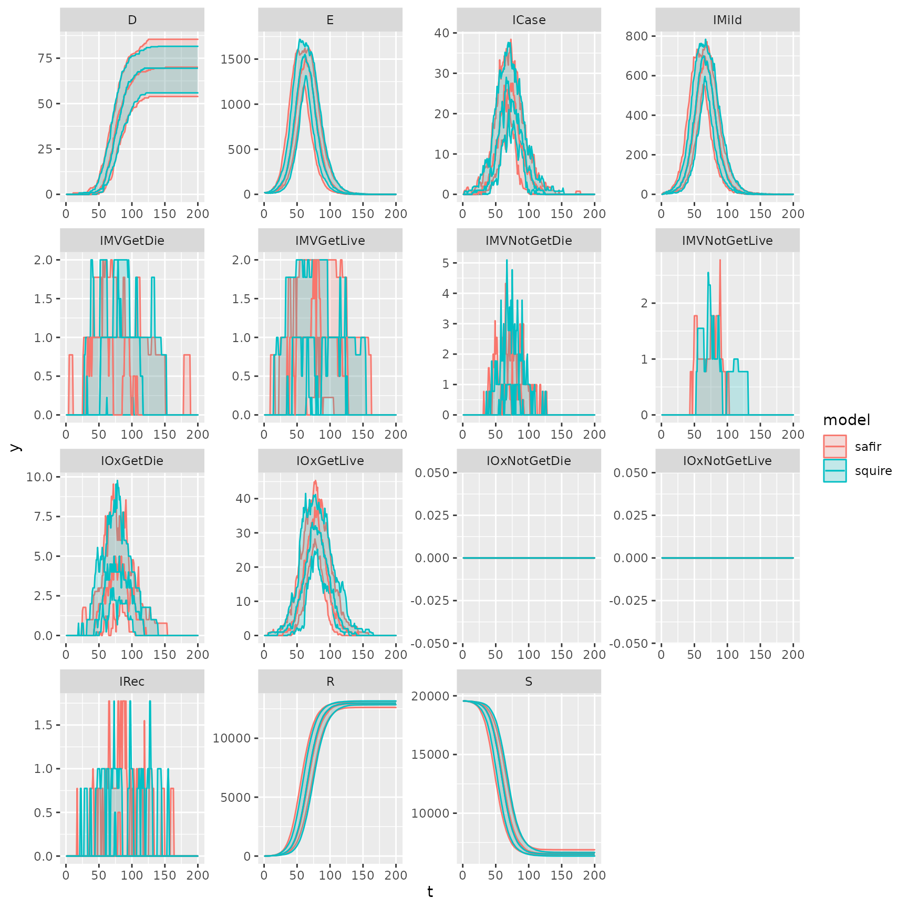

compare_squire.RmdLet’s compare safir to squire. Set up our parameters for running. We use a time step of 0.1 days. We use get_parameters to grab parameters directly from the squire package.
library(safir)
library(squire)
#>
#> Attaching package: 'squire'
#> The following object is masked from 'package:safir':
#>
#> get_population
library(data.table)
library(ggplot2)
library(parallel)
iso3c <- "ATG"
contact_mat <- squire::get_mixing_matrix(iso3c = iso3c)
pop <- safir:::get_population(iso3c)
# use as many as you want normally.
options("mc.cores" = 2)
nrep <- 10
# Scale it for speed
pop$n <- as.integer(pop$n / 5)
# Create our simulation parameters
R0 <- 2
time_period <- 200
dt <- 0.1
parameters <- safir::get_parameters(
population = pop$n,
contact_matrix_set = contact_mat,
iso3c = iso3c,
R0 = R0,
time_period = time_period,
dt = dt
)We’re going to compare it to squire. Let’s run that first.
out <- squire::run_explicit_SEEIR_model(
population = pop$n,
country = "Antigua and Barbuda",
contact_matrix_set = contact_mat,
time_period = 200,
replicates = nrep,
day_return = TRUE,
R0 = R0,
dt = dt
)Now we can run safir in parallel. Note that the timesteps is the maximum day divided by the size of the step, dt.
To set up the model, first call create_variables which creates the categorical states and ages for the simulated population. Then create_events and attach_event_listeners creates the list of events and attaches listeners which handle state changes and queue future events. Next, a renderer objects is made. Note that because we are only outputting simulation state every day despite the time step size, the number of time steps is equal to the number of days, not the total number of time steps taken.
Next the list of processes can be made. We use infection_process_cpp which is a C++ version of infection_process to speed up the simulation. Tests are included in the package to ensure the same results are returned when using identical random number seeds. Finally the simulation can be run.
system.time(
saf_reps <- mclapply(X = 1:nrep,FUN = function(x){
timesteps <- parameters$time_period/dt
variables <- create_variables(pop = pop, parameters = parameters)
events <- create_events(parameters = parameters)
attach_event_listeners(variables = variables,events = events,parameters = parameters, dt = dt)
renderer <- individual::Render$new(parameters$time_period)
processes <- list(
infection_process_cpp(parameters = parameters,variables = variables,events = events,dt = dt),
categorical_count_renderer_process_daily(renderer, variables$state, categories = variables$states$get_categories(),dt = dt)
)
setup_events(parameters = parameters,events = events,variables = variables,dt = dt)
individual::simulation_loop(
variables = variables,
events = events,
processes = processes,
timesteps = timesteps
)
df <- renderer$to_dataframe()
df$repetition <- x
return(df)
})
)
#> user system elapsed
#> 19.732 0.529 20.438Let’s organize our data for plotting. We’ll compare the 2.5th and 97.5th quantiles and median.
saf_reps <- do.call(rbind,saf_reps)
# safir
saf_dt <- as.data.table(saf_reps)
saf_dt[, IMild_count := IMild_count + IAsymp_count]
saf_dt[, IAsymp_count := NULL]
saf_dt <- melt(saf_dt,id.vars = c("timestep","repetition"),variable.name = "name")
saf_dt[, model := "safir"]
saf_dt[, name := gsub("(^)(\\w*)(_count)", "\\2", name)]
setnames(x = saf_dt,old = c("timestep","name","value"),new = c("t","compartment","y"))
saf_dt <- saf_dt[, .(ymin = quantile(y,0.025), ymax = quantile(y,0.975), y = median(y)), by = .(t,compartment,model)]
# squire
sq_dt <- as.data.table(squire::format_output(out, unique(saf_dt$compartment)))
sq_dt[, model := "squire"]
sq_dt <- sq_dt[, .(ymin = quantile(y,0.025), ymax = quantile(y,0.975), y = median(y)), by = .(t,compartment,model)]It should look nearly identical.
ggplot(data = rbind(saf_dt,sq_dt), aes(t,y,color = model)) +
geom_line() +
geom_ribbon(ggplot2::aes(ymin = ymin, ymax = ymax, fill = model), alpha = 0.2) +
geom_line() +
facet_wrap(~compartment, scales = "free")